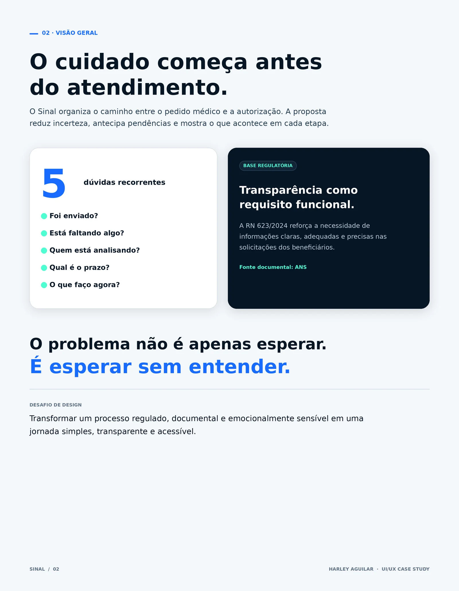
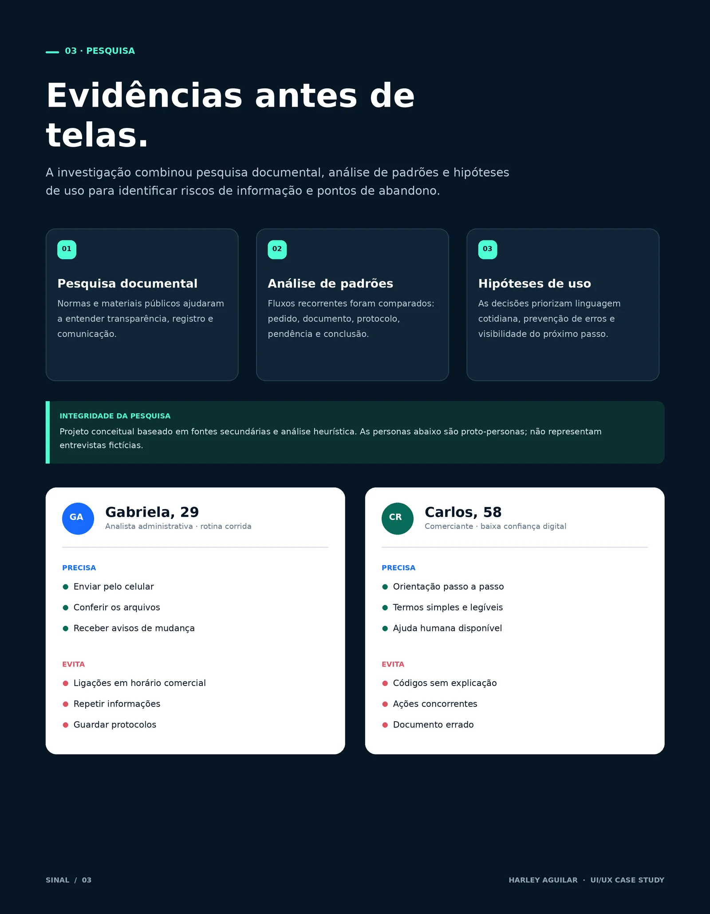
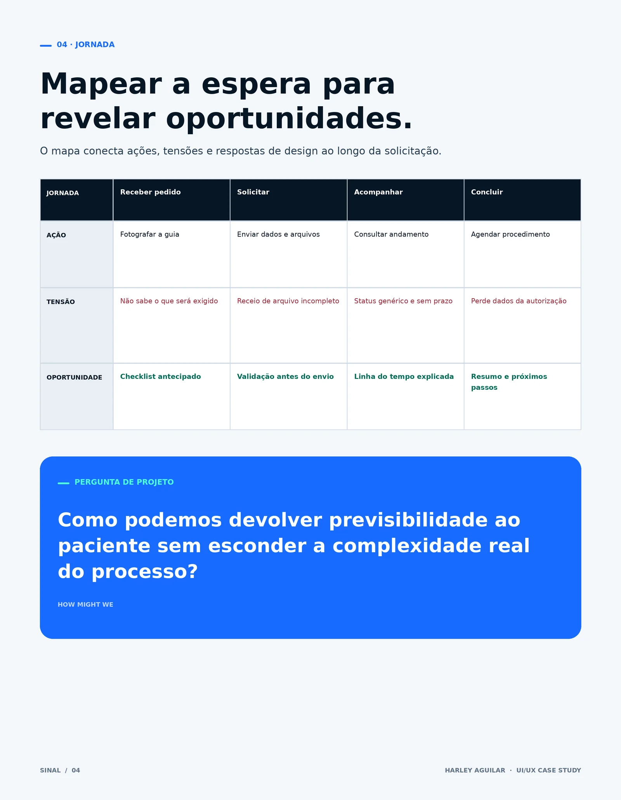
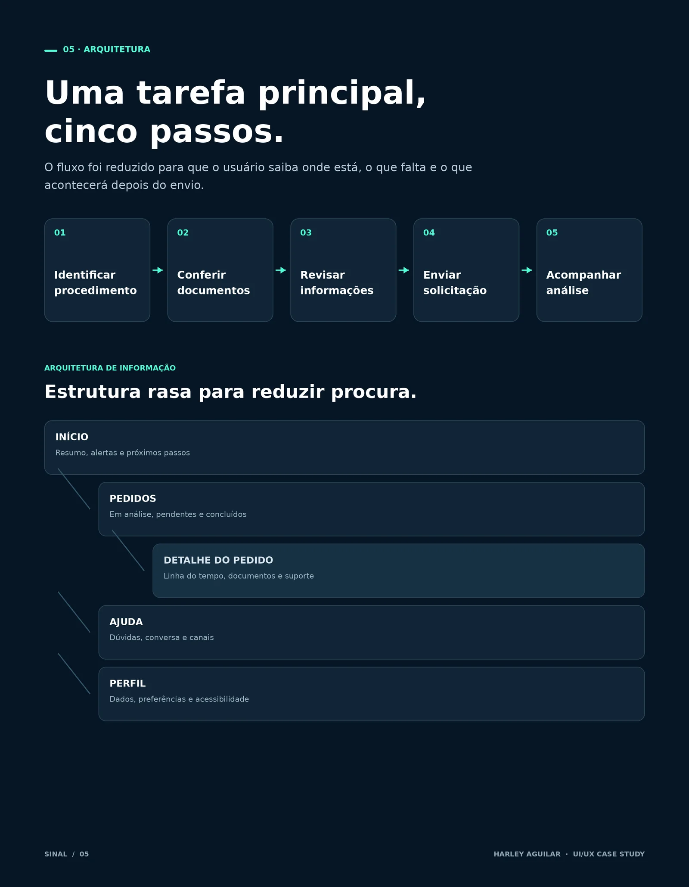
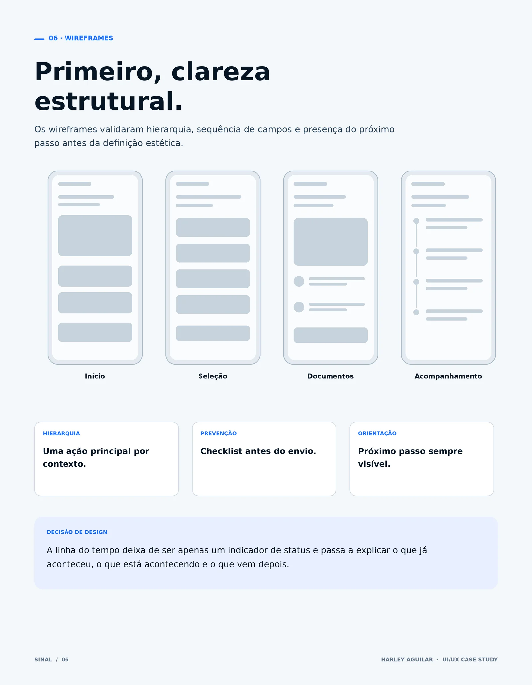
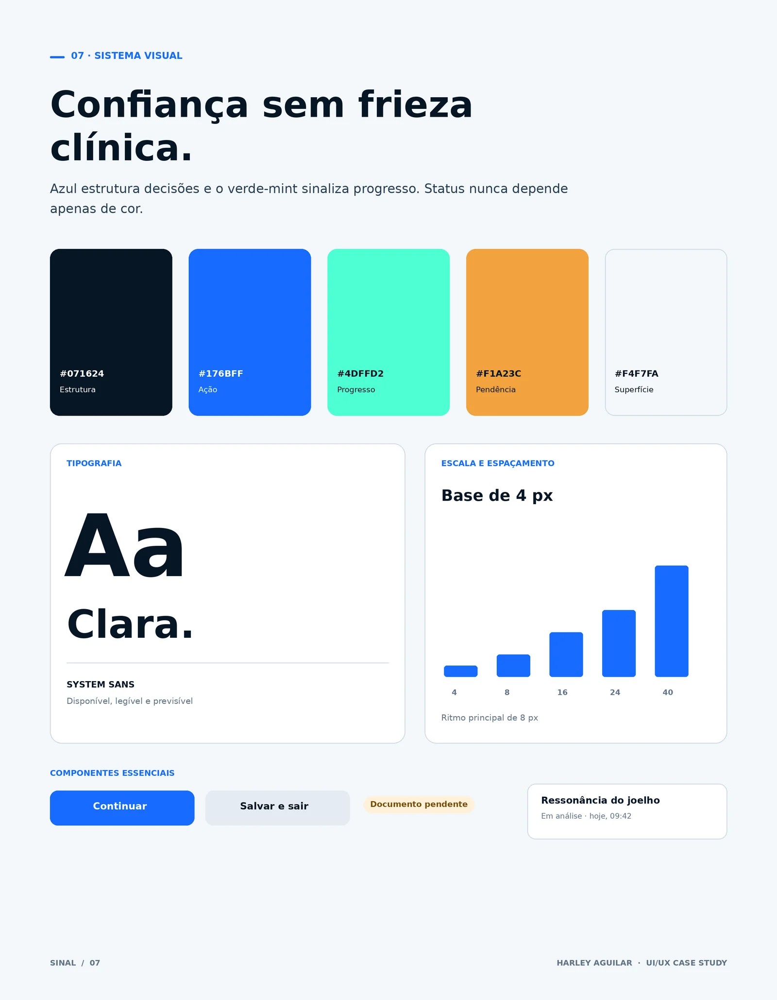
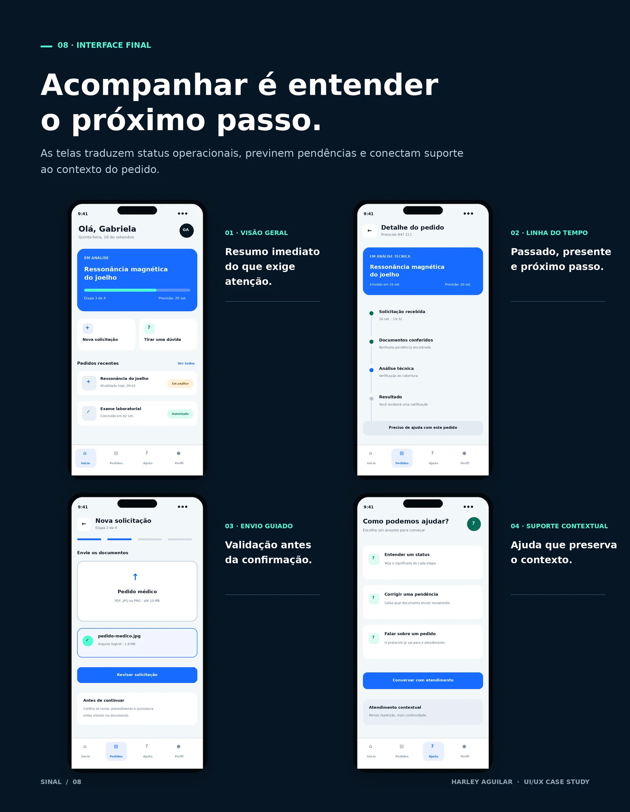
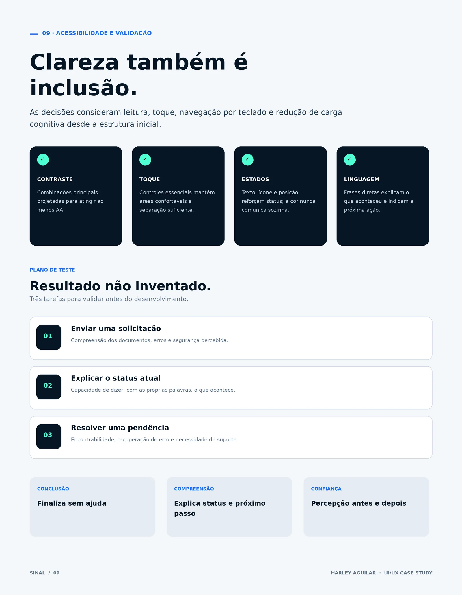
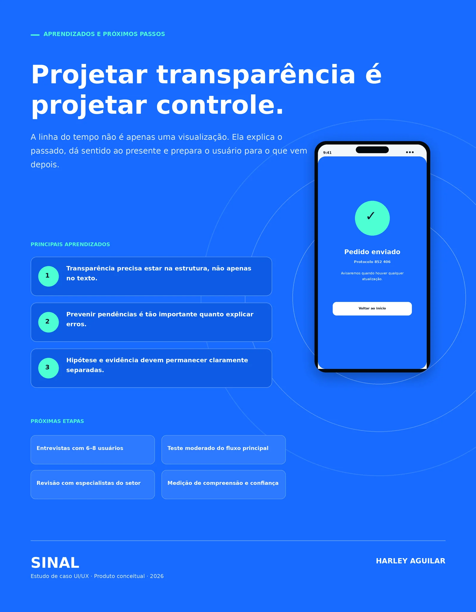

← Todos os projetos02 / UI/UX / Design de produto
SINAL
Autorizações de saúde com clareza em cada etapa. Estudo de caso de um aplicativo conceitual para solicitar, acompanhar e compreender procedimentos.
UI/UX · Pesquisa · Arquitetura de informação · Interface
 01 / Capa — Sinal, autorizações de saúde com clareza em cada etapa · Clique para ampliar
01 / Capa — Sinal, autorizações de saúde com clareza em cada etapa · Clique para ampliar

02 / Visão geral e desafio de design · Clique para ampliar

03 / Pesquisa documental e proto-personas · Clique para ampliar

04 / Jornada do paciente e oportunidades · Clique para ampliar

05 / Arquitetura da informação e fluxo · Clique para ampliar

06 / Wireframes e decisões de estrutura · Clique para ampliar

07 / Sistema visual: cores, tipografia e componentes · Clique para ampliar

08 / Interfaces finais do aplicativo · Clique para ampliar

09 / Acessibilidade e plano de validação · Clique para ampliar

10 / Conclusão, aprendizados e próximos passos · Clique para ampliar